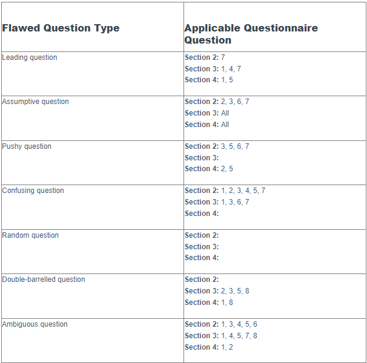

For this wiki activity, we were asked to find an existing questionnaire and to critique the design, by questioning the relevance and quality of questions within the questionnaire.
I chose this questionnaire issued by Mengi et al. (2024), used for researching orthodontists in Northern India. My full post can be seen below.
The attached questionnaire is taken from a study by Mengi et al. (2024) regarding awareness of, and attitudes toward, artificial intelligence (AI) among orthodontists in Northern India. The questionnaire was completed by practising orthodontists, qualified orthodontists in academia, and postgraduate orthodontic students. The study uses the results of the questionnaire to draw a conclusion on opinions amongst the selected participants. To achieve this, the questionnaire uses solely closed questions, and produces a purely quantitative dataset, which is then evaluated and compared between groups of participants.
The decision to present the questionnaire using only closed questions allows the authors to perform analysis easily and present clear conclusions, however, I feel that the subject matter of the survey (namely the use of AI in the field of orthodontics) provokes an emotional response, particularly from experts in the field. As such, individual opinions are likely highly nuanced in ways beyond the expectations of the authors, and the true feelings of the participants are unlikely to be sufficiently captured by using closed questions. In addition to this, it is reasonable to assume a proficiency with language amongst a population who are educated to this level. These conditions, I believe, mean that the use of open questions would provide significantly more meaningful data, in relation to the aim of the study. Whilst this data would be more difficult to analyse and draw conclusions from, it would likely provide a more beneficial contribution to the field of knowledge.
I found several of the questions used in the questionnaire to be poorly selected in aiming to conduct effective research. Looking at Section 2, which is where the questions about the subject matter begin, there are several examples of this. Question 1 reads:
'How aware are you about the use of AI in routine daily life (like speech recognition, text recognition, email spam filters)?'
with options ranging from 'Not at all aware' to 'Extremely aware'. This question is too broad and poorly defined, and the response choices are subjective, meaning many people will interpret them differently. On reflection, it is difficult to identify any meaningful data which can be gained from this question.
Question 2 reads:
'Which of the following is an AI app?'
and presents three popular AI applications, with an additional 'All of the above' option. This question is presumably aimed to establish how knowledgeable the participant is about the use of AI in the general domain, without asking them directly. The rationale for this is understandable; users' perception of their own depth of knowledge can be shaped by their actual depth of knowledge, meaning those who know less may appear to know more, and vice versa. However, this is, in itself, a flaw of the approach of this study and questionnaire. Attempting to grade participants' level of knowledge through closed questions, particularly flawed closed questions, will inevitably lead to poorly drawn conclusions and later analysis. This particular question is flawed as it is really only testing how aware the participant is of a certain aspect of modern culture, and not the subject matter of the study.
Due to the volume of similar occurrences throughout this questionnaire, I have attempted to summarise the questions against documented examples of types of flawed question (Barrett, 2020) in the following table:

References
Barrett, J. (2020) The 7 Deadly Survey Questions. Available from: https://www.getfeedback.com/resources/online-surveys/7-deadly-survey-questions/
Mengi, A., Singh, R.P., Mengi, N., Kalgotra, S. & Singh, A. (2024) A questionnaire study regarding knowledge, attitude and usage of artificial intelligence and machine learning by the orthodontic fraternity of Northern India. Journal of Oral Biology and Craniofacial Research 14(5): 500-506.